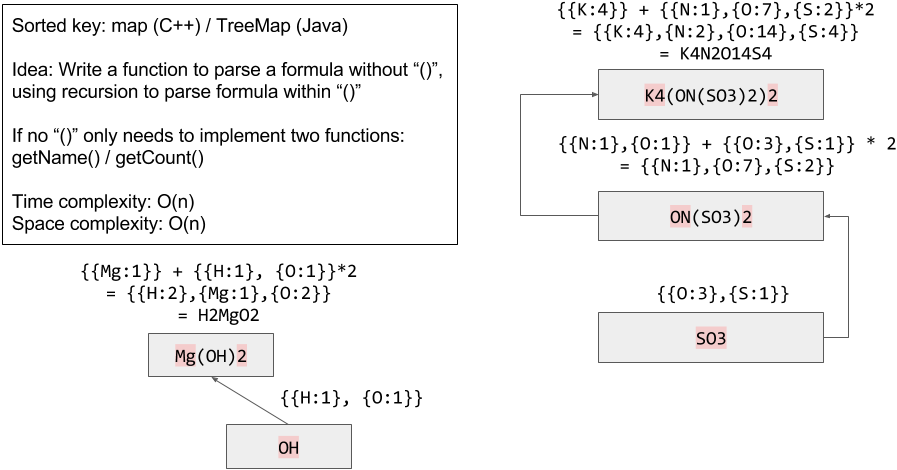

Task
Given a chemical formula (given as a string), return the count of each atom.
An atomic element always starts with an uppercase character, then zero or more lowercase letters, representing the name.
1 or more digits representing the count of that element may follow if the count is greater than 1. If the count is 1, no digits will follow. For example, H2O and H2O2 are possible, but H1O2 is impossible.
Two formulas concatenated together produce another formula. For example, H2O2He3Mg4 is also a formula.
A formula placed in parentheses, and a count (optionally added) is also a formula. For example, (H2O2) and (H2O2)3 are formulas.
Given a formula, output the count of all elements as a string in the following form: the first name (in sorted order), followed by its count (if that count is more than 1), followed by the second name (in sorted order), followed by its count (if that count is more than 1), and so on.
Example
1
2
3
4
5
|
Input:
formula = "H2O"
Output: "H2O"
Explanation:
The count of elements are {'H': 2, 'O': 1}.
|
1
2
3
4
5
|
Input:
formula = "Mg(OH)2"
Output: "H2MgO2"
Explanation:
The count of elements are {'H': 2, 'Mg': 1, 'O': 2}.
|
1
2
3
4
5
|
Input:
formula = "K4(ON(SO3)2)2"
Output: "K4N2O14S4"
Explanation:
The count of elements are {'K': 4, 'N': 2, 'O': 14, 'S': 4}.
|
Note:
- All atom names consist of lowercase letters, except for the first character which is uppercase.
- The length of
formula will be in the range [1, 1000].
formula will only consist of letters, digits, and round parentheses, and is a valid formula as defined in the problem.
Solution
- 由于中间可以有括号，故可递归解决

- 定义两个工具函数：
- getName()用于在字符串的某个位置取元素名，返回string
- getCount()用于在字符串的某个位置取数字，返回int
- 递归过程：
- 使用字典维护元素名到原子数的映射，并自动维护元素名的顺序
- 读到
(时触发递归，调用自身处理()内的部分，在内层函数读到)时向上一层返回结果
- 一层递归结束后，外层函数读取
()后的数字，将该数字乘上内层函数的原子数，加到外层维护的字典中
- 在整个递归过程中，以及使用getName/getCount时，传入的index都是引用，将当前处理位置向前推进的任务在这些函数内部完成
时间复杂度：只需扫描一遍字符串，时间复杂度是O(n)空间复杂度：建立的字典规模取决于字符串中unique的元素数量，空间复杂度是O(n)- 实现：
1
2
3
4
5
6
7
8
9
10
11
12
13
14
15
16
17
18
19
20
21
22
23
24
25
26
27
28
29
30
31
32
33
34
35
36
37
38
39
40
41
42
43
44
45
46
47
48
49
50
51
52
53
54
55
56
57
58
59
60
|
// Runtime: 4 ms, faster than 78.66% of C++ online submissions for Number of Atoms.
// Memory Usage: 7 MB, less than 100.00% of C++ online submissions for Number of Atoms.
class Solution {
public:
string countOfAtoms(string formula) {
int i=0; //存储当前位置，该值在整个过程中以引用方式传递
string ans; //存储结果
//递归求得字典
const auto &counts=countOfAtoms(formula,i);
//从字典中生成输出字符串
for(const auto &kv:counts){
ans+=kv.first;
//当元素数目是1时不添加内容，否则将元素数目转为字符串添加在后
ans+=(kv.second==1)?"":to_string(kv.second);
}
return ans;
}
private:
map<string,int> countOfAtoms(const string &formula,int &i){
//每层递归都维护自己的字典
map<string,int> counts;
while(i!=formula.size()){
//遇到(时进入内层递归
if(formula[i]=='('){
//取内层递归的结果，执行前用++i跳过(进入内部，执行完这一句后i指向对应的)
const auto &tmp_counts=countOfAtoms(formula,++i);
//用++i跳过)，取)后面的数字，代表()中整个部分出现的次数
const int tmp_count=getCount(formula,++i);
//将内层递归的结果合并入本层递归
for(const auto &kv:tmp_counts)
counts[kv.first]+=kv.second*tmp_count;
}
//遇到)时什么都不做，跳出这一层递归，将这一层求得的结果返回给上一层
else if(formula[i]==')')
return counts;
//既不是(又不是)时正常读取元素名和原子数，存入字典
else{
const string &name=getName(formula,i);
counts[name]+=getCount(formula,i);
}
}
return counts;
}
//读取i位置处的元素名，并将i向前推进
string getName(const string &formula,int &i){
string name;
//i位置是字母，第一个字母可以是大写，后面的字母必须是小写，否则认为是下一个元素，终止循环
while(isalpha(formula[i]) && (name.empty() || islower(formula[i])))
name+=formula[i++];
return name;
}
//读取i位置处的原子个数，并将i向前推进
int getCount(const string &formula,int &i){
string count;
while(isdigit(formula[i]))
count+=formula[i++];
//若读到的数字是空，则是被省略的1，否则将数字的字符串转为整型
return count.empty()?1:stoi(count);
}
};
|